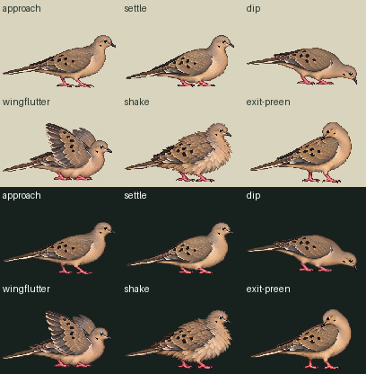
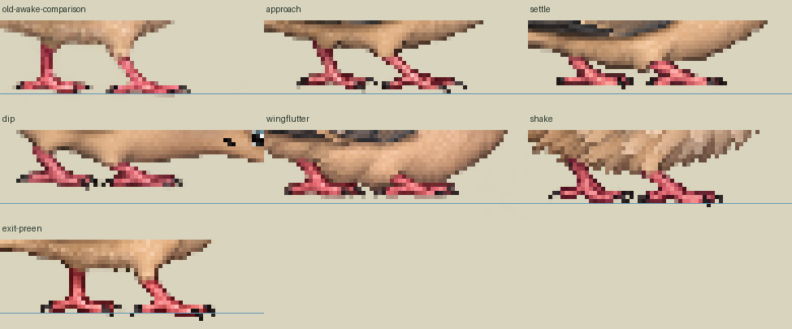

Loading current source inventory…
Every actual native1536×1024 is sampled by the SAME explicitfloor-center nearest channel copy to144×96, then SAME crop[4,8,140,88]→136×80. No fit, warp, paint, foot snap or alpha cleanup. Sibling producer exports are preserved even when their Pillow tie sampling differs. Cohort PNGs are derivatives, not new drawings.
Actual normal136×80CSS, density1, fixed pivot/root77,76. Approach18→settle18→dip12→wingflutter18→shake12→exit-preen24ticks at30Hz. Timing is authored, not verified bathing biology. Root stays static; phase changes come from real native body-pose drawings. No whole-sprite translation substitutes for phase art.
Six candidate frames total65,280decoded pixels. Exact old awake is a SEPARATE comparison outro after the candidate, outside its asset/area. Missing phases are explicit and full playback stays disabled until all six real originals return. Source contacts[], geometryReviewedfalse/supportWorldnull; water/floor are illustrative overlays only. Full bathing slot, physical water contact, geometry and runtime admission remain unaccepted.

